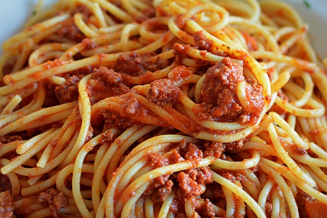

Home
Spaghetti

Description
This is a recipe for classic spaghetti and meatballs. Should be not to difficult to make.
Ingredients
- 1 pound of ground beef
- 1/2 cup of breadcrumbs
- 1/4 cup grated Parmesan cheese
- 1 egg
- 2 cloves garlic, minced
- 2 tbsp chopped fresh parsley (or 1 tbsp dried)
- 1/2tsp salt
- 1/2 tsp black pepper
- 2 tbsp milk
- 1/2 tbsp olive oil (for frying)
- 12 oz (340g) spaghetti
- Salt (for pasta water)
- Fresh basil or extra Parmesan (optional, for garnish)
Steps
- In a large bowl, combine ground meat, breadcrumbs, Parmesan, egg, garlic, parsley, salt, pepper, and milk.
- Mix gently (don't overwork the meat).
- Roll into 1-1/2 inch balls.
- Heat olive oil in a large skillet over medium heat.
- Brown the meatballs on all sides (about 6-8 minutes total). They don't need to be fully cooked yet.
- Remove and set aside.
- Bring a large pot of salted water to a boil.
- Add spaghetti and cook according to package instructions until al dente.
- Drain (reserve 1/2 cup pasta water if needed).
- Toss spaghetti with some sauce (add a splash of pasta water if needed).
- Plate and top with meatballs and extra sauce.
- Garnish with fresh basil and Parmesan.